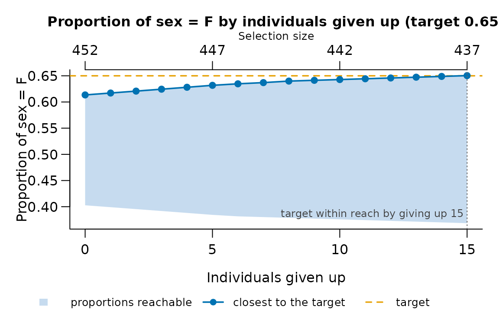

A family usually has several maximum sets, all equally large.
Covariates can decide among them in two ways: by preferring some
individuals within each family (rkn_select_criteria()), or
by steering the composition of the whole selection towards a target
proportion or mean (rkn_select_global()). This vignette
uses the example cohort, with the network built as in Get started
with RedKinNet.
library(RedKinNet)
kin <- rkn_example$kinship
covariates <- rkn_example$samples
chk <- rkn_check_samples(kin, threshold = "third", samples = covariates$id)
g <- rkn_graph_from_kinship(kin, threshold = "third", samples = covariates$id,
exclude = chk$contamination$id, covariates = covariates,
check = FALSE)Preferring individuals
A criterion states a preference: rkn_criterion_cutoff()
prefers values above or below a cutoff, and
rkn_criterion_level() prefers one value of a covariate,
such as cases over controls. Here the samples with a call rate above
0.99, the better-genotyped ones, are preferred whenever the family
offers a choice.
prefer_quality <- rkn_criterion_cutoff("call_rate", cutoff = 0.99, prefer = "above")
sel <- rkn_select_criteria(g, prefer_quality, seed = 1)
sel
#> <rkn_selection> Criteria-based selection (cutoff), seed 1
#> Call: rkn_select_criteria(g = g, criterion_primary = prefer_quality, seed = 1)
#> Individuals: 751 | selected: 452 (60.2%)
#> Families: 376 | size min/mean/max: 1 / 2.00 / 31
#> Families with up to 5 members: 357 | with 6 or more: 19
#> Families resolved by a search over maximum sets: 18By default the criteria decide the choices left open by the
structural rules. With optimal = TRUE they choose among all
the maximum sets of each family, so that the selection contains as many
preferred individuals as possible.
sel_optimal <- rkn_select_criteria(g, prefer_quality, optimal = TRUE, seed = 1)
low_quality <- function(s) sum(covariates$call_rate[match(s$kept, covariates$id)] <= 0.99)
c(default = low_quality(sel), optimal = low_quality(sel_optimal),
uniform = low_quality(rkn_select_random(g, uniform = TRUE, seed = 1)))
#> default optimal uniform
#> 74 72 98A second criterion breaks the ties left by the first, for instance preferring older individuals when the call rate does not decide.
prefer_older <- rkn_criterion_cutoff("age", cutoff = 50, prefer = "above")
rkn_select_criteria(g, prefer_quality, prefer_older, optimal = TRUE, seed = 1)
#> <rkn_selection> Criteria-based selection over all maximum sets (cutoff, then cutoff), seed 1
#> Call: rkn_select_criteria(g = g, criterion_primary = prefer_quality, criterion_secondary = prefer_older, optimal = TRUE, seed = 1)
#> Individuals: 751 | selected: 452 (60.2%)
#> Families: 376 | size min/mean/max: 1 / 2.00 / 31
#> Families with up to 5 members: 357 | with 6 or more: 19
#> Families where the criteria were evaluated over all maximum sets: 376 of 376
#> Maximum sets: 4.4e+54 in total; families with more than one: 127 of 376Since every family keeps its largest size, a preference applied within each family is also best for the selection as a whole: no choice in one family can make up for another.
A target composition
Some targets concern the selection as a whole: as many women as men,
or a mean age matching that of a group of cases. The best choice in one
family then depends on the others, and rkn_select_global()
chooses all the families jointly, exactly.
balanced <- rkn_select_global(g, "sex", target = c(F = 0.5), seed = 1)
balanced
#> <rkn_selection> Global selection (proportion of sex = F), seed 1
#> Call: rkn_select_global(g = g, covariate = "sex", target = c(F = 0.5), seed = 1)
#> Individuals: 751 | selected: 452 (60.2%)
#> Families: 376 | size min/mean/max: 1 / 2.00 / 31
#> Families with up to 5 members: 357 | with 6 or more: 19
#> Proportion of sex = F among the selected: 0.5000 (222 of 444 with a known value; target 0.5)
#> Selected with a missing value of sex: 8
#> Selections reaching this proportion: 1.5e+53, one drawn uniformlyWithout a target, the selection keeps the composition of the cohort.
rkn_select_global(g, "sex", seed = 1)
#> <rkn_selection> Global selection (proportion of sex = F), seed 1
#> Call: rkn_select_global(g = g, covariate = "sex", seed = 1)
#> Individuals: 751 | selected: 452 (60.2%)
#> Families: 376 | size min/mean/max: 1 / 2.00 / 31
#> Families with up to 5 members: 357 | with 6 or more: 19
#> Proportion of sex = F among the selected: 0.4910 (219 of 446 with a known value; target 0.4912, the proportion of the network)
#> Selected with a missing value of sex: 6
#> Selections reaching this proportion: 4.9e+51, one drawn uniformlyFor a numeric covariate the target is a mean. The values are rounded
to a grid for the search, whose step is the resolution; the
reported mean is that of the recorded values. A family whose computation
would exceed the time and memory budget is resolved approximately, and
the printed summary says so; a coarser resolution makes the computation
smaller.
rkn_select_global(g, "age", target = 50, seed = 1)
#> <rkn_selection> Global selection (mean of age), seed 1
#> Call: rkn_select_global(g = g, covariate = "age", target = 50, seed = 1)
#> Individuals: 751 | selected: 452 (60.2%)
#> Families: 376 | size min/mean/max: 1 / 2.00 / 31
#> Families with up to 5 members: 357 | with 6 or more: 19
#> Mean of age among the selected: 50.00 (437 individuals with a known value; target 50)
#> Selected with a missing value of age: 15
#> Families beyond the computational budget: 1; the mean may not be the best possible, and the choice within them is not uniform
rkn_select_global(g, "age", target = 50, resolution = 5, seed = 1)
#> <rkn_selection> Global selection (mean of age), seed 1
#> Call: rkn_select_global(g = g, covariate = "age", target = 50, resolution = 5, seed = 1)
#> Individuals: 751 | selected: 452 (60.2%)
#> Families: 376 | size min/mean/max: 1 / 2.00 / 31
#> Families with up to 5 members: 357 | with 6 or more: 19
#> Mean of age among the selected: 50.02 (440 individuals with a known value; target 50)
#> Values of age rounded to multiples of 5 for the search: the distance of this mean from the target exceeds the smallest possible by at most 5
#> Selected with a missing value of age: 12
#> Selections reaching this mean of the rounded values: 3.4e+51, one drawn uniformlyGiving up individuals for a closer composition
The selections of the largest size reach a range of compositions, and
a target outside that range cannot be met without giving up individuals.
rkn_tradeoff() shows, before selecting, the composition
reachable for each number of individuals given up.
tr <- rkn_tradeoff(g, "sex", target = c(F = 0.65))
tr
#> <rkn_tradeoff> Proportion of sex = F by individuals given up (target 0.65)
#> Largest selection: 452 individuals, proportion of F from 0.4027 to 0.6135
#> Target within reach by giving up 15 (3.3% of the largest selection), a selection of 437
#> Proportions among the selected individuals with a known value of sex
#> loss size proportion distance min_proportion max_proportion selections
#> 0 452 0.6135 0.0365 0.4027 0.6135 6.1e+23
#> 1 451 0.6171 0.0329 0.3991 0.6171 3.2e+24
#> 2 450 0.6208 0.0292 0.3955 0.6208 6.1e+24
#> 3 449 0.6244 0.0256 0.3918 0.6244 5.6e+24
#> 4 448 0.6281 0.0219 0.3881 0.6281 2.5e+24
#> 5 447 0.6318 0.0182 0.3844 0.6318 4.1e+23
#> 6 446 0.6347 0.0153 0.3816 0.6347 2.0e+23
#> 7 445 0.6370 0.0130 0.3802 0.6370 8.2e+23
#> 8 444 0.6399 0.0101 0.3788 0.6399 4.1e+23
#> 9 443 0.6414 0.0086 0.3773 0.6414 6.3e+25
#> 10 442 0.6429 0.0071 0.3759 0.6429 4.9e+27
#> 11 441 0.6443 0.0057 0.3744 0.6443 2.5e+29
#> 12 440 0.6458 0.0042 0.3730 0.6458 9.3e+30
#> 13 439 0.6473 0.0027 0.3715 0.6473 2.8e+32
#> 14 438 0.6488 0.0012 0.3700 0.6488 7.0e+33
#> 15 437 0.6503 0.0003 0.3685 0.6503 1.5e+35
plot(tr)
The argument max_loss of
rkn_select_global() then allows that many individuals to be
given up.
rkn_select_global(g, "sex", target = c(F = 0.65), max_loss = attr(tr, "tradeoff")$reached, seed = 1)
#> <rkn_selection> Global selection (proportion of sex = F), seed 1
#> Call: rkn_select_global(g = g, covariate = "sex", target = c(F = 0.65), max_loss = attr(tr, "tradeoff")$reached, seed = 1)
#> Individuals: 751 | selected: 437 (58.2%)
#> Families: 376 | size min/mean/max: 1 / 2.00 / 31
#> Families with up to 5 members: 357 | with 6 or more: 19
#> Proportion of sex = F among the selected: 0.6503 (279 of 429 with a known value; target 0.65)
#> Selected with a missing value of sex: 8
#> Selected: 437 of a largest possible 452 (max_loss = 15)
#> Selections reaching this proportion and size: 1.5e+35, one drawn uniformly